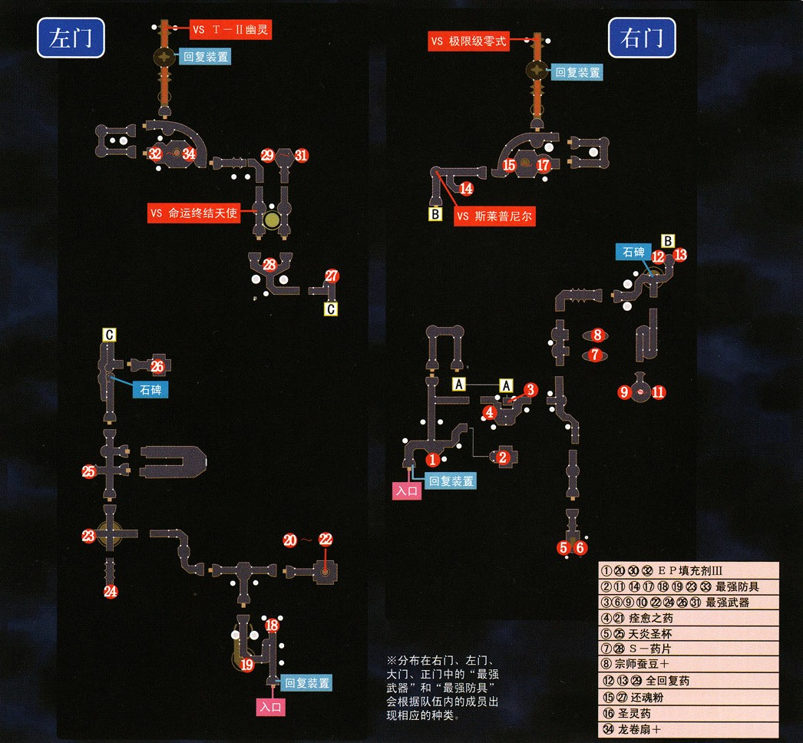

最终话 历尽艰险·终抵彼岸
☆最终话开始之后，在大树下书架会找到利贝尔通讯02年后期~03年前期（SC部分），注意这里会得到一期SC游戏中不会获得的通讯，介绍了方舟事件的解决过程。☆如果此前收集了全部书籍的话，此时会获得饰品"翡翠头环"（防止全部状态异常并大幅提升能力值）
对于PSP玩家，最终话开始后，在庭院的泉水处可以得到回路。战斗次数300次以上、逃跑0次将获得"神镜"回路（地6火8空4，50%几率性反射物理攻击、最大HP-20%）；战斗次数300次以上、逃跑300次将获得"魔镜"回路（水8风6幻4，50%几率反射魔法、最大EP-30%）。
最终话终于到来了，凯文不再是队伍中的常驻角色，此时可以编组任意四名角色到队伍中来。与塞雷斯托对话，就会开启新的地图——深渊。深渊内的敌方经验值很高，由于最后的决战中所有角色都要上场，建议通过深渊的地图将所有队员的等级都提升到130（有资料表明不到130也可，但要求最后的四个队伍中每个队都有一名主力角色等级不少于130级，否则初期的战斗会比较艰难）。
{kind=link}
深渊的结构很简单，一条线走到底即可，注意第四个BOSS大天使羊的出现条件：打死前三个BOSS之后，并且没有经过深渊入口的石碑进行传送的话，大天使羊就会出现在深渊的终点。由于不能使用入口处的石碑传送，所以第一批队员只能一直前进到终点前的星之门15才能回到据点。好在前三个BOSS难度不大，大多数人员配比都能轻易通过。
第一个BOSS会用魔法"苍白地狱"攻击，带气绝效果，弱点是幻属性。第二个BOSS可能会用即死攻击，建议开场爆S清理。第三个BOSS会冰冻攻击，建议开场爆S清理小怪。继续前进就会看到最后一个门——星门15，建议调查完毕之后回到据点，把玲和科洛丝带上，直接传送回星门15.
【星之门15】队伍中有玲就能进入，这段剧情不同的版本有不同的内容，具体的问题这里就不细说了，建议想多了的同学去玩玩零之轨迹，那里面对这个问题有明确解答。 详情点击
继续前进，遭遇深渊第四个BOSS大天使羊，直接用科洛丝的第二个S技——圣星光旋——就能直接秒杀。建议开场用数字键直接抢S。由于天使羊回避率、防御力都很高，魔法攻击无效，所以科洛丝的圣星光旋这个物理攻击、魔法计算的S技有效而且可以造成很高的伤害（只要没装减少ATS的装备回路都可以秒杀），其他人物在堆高STR的前提下使用满CP的S技也能造成不小的伤害，但是凯文的魔枪洛亚和圣枪乌尔、理查德的残光破碎剑都有魔法属性，所以对天使羊无效。深渊的4个BOSS每击败一个都会获得塞姆里亚石，拿着这个跟塞雷斯托对话就能制作最终武器，继承过存档的在第六话开始时就已经制作了，没继承3rd存档的只能现在制作了。
出发前把剩下的门都打开吧。
【太阳之门③ 里·武术大会】（噩梦难度）拿着深渊里面开宝箱得到的里·武术大会参加许可证就能进入了，这次是四连战，四场战斗的对手都很强大，组建最强的队伍来挑战吧。胜利后获得20000mira和魂之理（回路，战斗中自动减EP补充CP，是唯一一个可以自动回复CP的回路）；PSP玩家如果带着亚妮拉丝来挑战的话，胜利后武器利剑"迅羽"会得到强化，强化后的属性值比用塞姆里亚石制作的武器还要强。
【太阳之门⑤】要求有全部种类的耀珠才能进入(目前可以收集到的耀珠共计11种)。是一个问答小游戏，都是关于轨迹系列的各种问题，就看你是否细心了。（附图：P125~126）PSP玩家注意，PSP版追加了一个Maniac难度，奖品为刻耀珠（驱动3，驱动时间减少95%，STR/DEF降低20%，ATS降低15%） 详细攻略点击
【星之门13】需要战斗胜利400次才能进入，基本上不在深渊刷怪很难达到400战，实在懒得打的可以用改之理改一下= =门内会看到关于帝国游击士协会被袭击事件的调查报告，这个的时间大致是FC前后的一段时间，可以了解卡西乌斯离开家之后的部分行动。奖励10000mira和防具狩猎重铠。
【星之门14】完成其他所有的门之后就可以进入，可以看到关于结社的幻焰计划的一些端倪。奖励30000mira和饰品炽煌之冠。
都准备好之后，给全部16名队员准备好装备和回路，与塞雷斯托对话选择"前往影之国"就会继续前进了。剧情后开始分组，凯文和莉丝与另外两名队员走大门，其余12名队员四人一组走左、右、正三个门，四个门最后将同时发生BOSS战，大门难度较大，另外三个门难度差别不大，建议每个队有一个会用全屏S技的和一个负责回复的人员。特别的，如果提妲要用"导力装甲"参战的话，请不要走右门，前方BOSS会用即死效果的攻击，导力装甲无法防御；玲在遇到高达系敌人会很兴奋；阿加特与神龙有特殊对话等等。
分配完毕之后就要继续前进了。玩家可以自行选择左、右、正三个门的攻略顺序，三个门都到终点之后才能走大门。注意，四个队伍的装备和回路是共享的， 阴阳、阳炎等走迷宫必备的回路以及一些回复CP的饰品等等可以通过拆卸重复使用；但是四个门的最后一战是同时进行的，都不能调整装备回路，所以还是要为每名队员的最后一战准备足够的回路（防具等等可以在幻影城捡到）。
先介绍左门。

每个门都有大量最终装备，不要忘了拿。中间会遇到中BOSS，注意防御即死、混乱等状态；如果陷入困境的话，此战允许逃跑，退出来重新调整再继续也可以。继续前进到回复装置，把给别的队伍的回路卸下，调整好本队的装备回路，存档之后继续前进，镜头会切回幻影城入口，继续选择队伍。下面介绍右门。
{kind=link}
这边的中BOSS不会使用异常状态攻击，只需要注意回复就能通过。继续前进到回复点，调整好之后继续前进。镜头切回到入口，这次我们选择正门。
{kind=link}
正门的中BOSS会混乱和气绝，防御好之后很轻松，继续前进到回复点，调整好之后继续前进。
最后是大门的队伍。
大门的敌人实力最强。中BOSS跟左门的一样，会即死攻击，注意防御。走到回复点并做好最后的调整之后前进到大门处，剧情选择"打开门"就会开始最后的BOSS战，注意此后的连战将不能中途调整装备，所以最好先存一下档再继续剧情。BOSS战是四连战，将由四个门的队伍分别击败四个BOSS之后才能通关。
左门BOSS是T-幽灵，其实就是FC的BOSS的加强版，战斗方法也差不多，注意回复要跟上，同时注意敌人的AA抵消弹会打断我方吟唱的魔法。
右门BOSS是金色巨人，会用黑暗和气绝攻击，建议开场爆S清场，之后集中火力消灭金色巨人即可。
正门BOSS是神龙，注意防御混乱和气绝。对方会使用根源屏障，所以此战魔法角色只能辅助和回血了。
大门是整个游戏最后的总BOSS——世界之意志。该BOSS开场之后第一次行动会使用"炼魔招来"召唤出七个属性的圣柱，七个柱子分别对应其中属性，只有对应属性的魔法以及无属性的物理攻击才能攻击，七个柱子被全部消灭之前，BOSS的本体处于无敌状态，这期间敌人只会使用魔法"七曜危机"，伤害会随着柱子的减少而减少，初期七根柱子的状况下释放时如果没有防御的话很容易灭团。七根柱子清理完毕之后就可以攻击BOSS本体了，这阶段BOSS会召唤小怪（小怪攻击力很强，死后会自爆，还会令我方人员消失），使用"邪光波·蛇神之预言"之后使用"圣痕炮·星球之毁灭"，圣痕炮的杀伤力极强，一般情况下只有满血的金和导力装甲状态的提妲能剩点HP，其余角色都会被满血秒杀，所以一旦对方使用邪光波之后务必给全体队员套上墙。
本战有两种方法，第一种是在敌人召唤圣柱之前就消灭掉，该方法一般是高手玩的，作战队员一般是连锁组或是理查德等人，并且需要对AT栏有着精确的控制，这里就不介绍了，大多数玩家的玩法应该是这样的：凯文的S技设为星杯领域，开场全员不进行物理攻击，只用"时间加速改"、"星之守护"或是"强音之力"等魔法增加速度、攻击力等等，当对方召唤出七根柱子之后全员使用对应的魔法或是物理攻击柱子，由于七曜危机吟唱时间很长，所以在释放之前保证放出星杯领域即可。队伍中如果有一名拥有全屏S技的队员的话，战斗就会变得很容易（凯文的两个攻击S技和理查德的残光破碎剑都有属性，不能随便使用），记得多用莉丝的"圣洁祝福"给需要CP的队员补充CP。清完柱子之后注意全员时刻有墙，之后物理系冲到前线慢慢砍就能保证获胜。
战斗后漫长的剧情，大家相互告别的剧情非常感人（很多角色从此以后就没有出场了，所以珍惜吧），空之轨迹三部曲，到此结束。 再见。
补充资料：此后还有登场的空之轨迹人物：
①PSP游戏伊苏VS空之轨迹——一部大乱斗作品，大多数空轨可控人物都有登场，该游戏有汉化；
②空之轨迹X魔唤精灵：约修亚和艾丝蒂尔有登场，不过只是客串一下= =
③零之轨迹——空之轨迹的正统续作，故事发生在空之轨迹3rd结束后数月，舞台转移至塞姆利亚大陆西部另一个在大国夹缝中艰难生存的小国——克洛斯贝尔自治州，一群年轻的警察们在刚刚组建的特别任务支援科的大旗下与悄然而至的黑暗坚持斗争。战斗系统继承自空轨并有小幅改变。艾丝蒂尔和约修亚在序章结束时登场，并不断与四位主角相遇，终章加入队伍并可控。克洛斯贝尔是玲的故乡，零之轨迹也给出了玲的最后去向。安敦和利库斯也在本作登场。
④碧之轨迹——零之轨迹的续作。围绕塞姆利亚大陆西部的政治问题，在克洛斯贝尔召开了国际会议，骚乱平息后的克洛斯贝尔却面临着更加严重的危机——这些危机最终导致了战火。本作中凯文、莉丝作为教会人员来到了克洛斯贝尔，科洛丝、尤利娅、基库、奥利维尔、穆拉等人也来参加国际会议。在克洛斯贝尔陷入困境之际，艾丝蒂尔、约修亚和玲等人也从利贝尔赶来助主角们一臂之力。